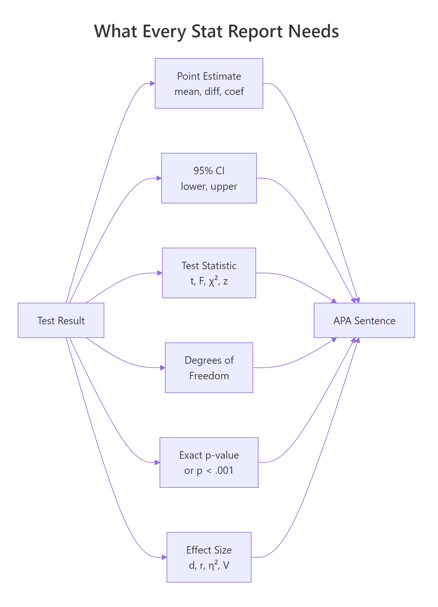
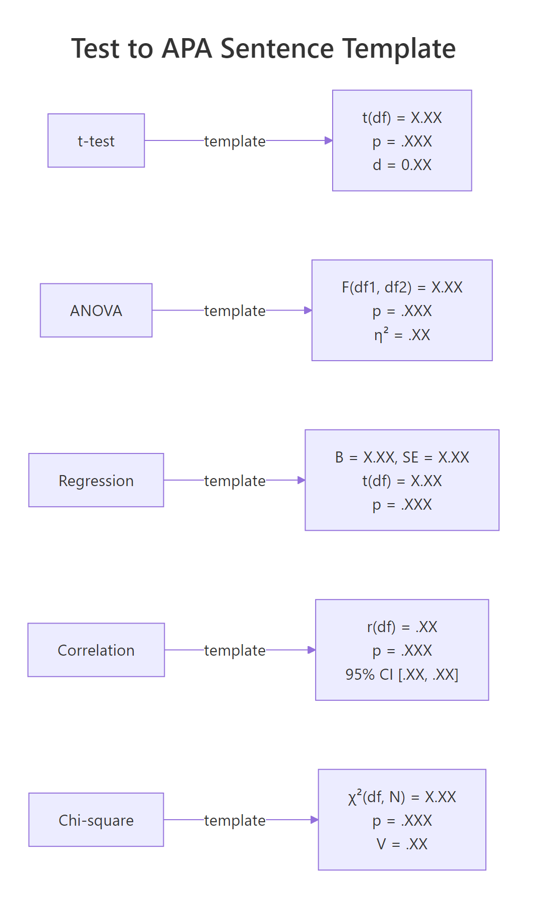
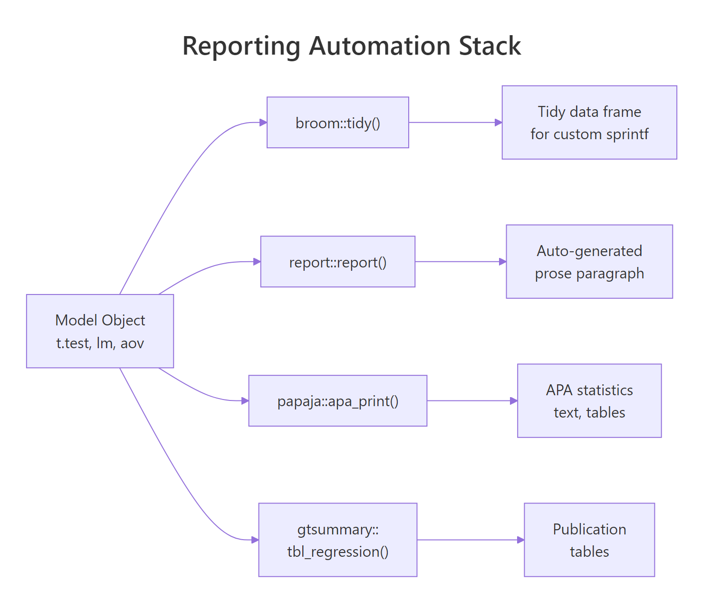

Report Statistics in R: The Numbers to Include and the Words to Use
Reporting a statistical result in R means writing one sentence that combines six things: a point estimate, a 95% confidence interval, a test statistic with its degrees of freedom, an exact p-value, an effect size, and the sample size. This tutorial shows the APA template for each common test, the R code that produces those numbers, and the packages that write the sentence for you.
What should every statistical report include?
Most R walkthroughs stop at summary(model) and leave you to translate the output into prose. That translation is where write-ups go wrong. A lone p-value tells the reader something happened, but nothing about how big the effect is or how certain we are. A complete report pairs a point estimate with a confidence interval, names the test and its degrees of freedom, gives an exact p-value, adds an effect size, and reminds the reader of the sample size. Below is a full APA-style sentence built from one t-test.
One run produces the full sentence. It names the direction of the effect (manual > automatic), gives the point estimate (7.24 mpg), bounds it with a 95% CI, reports the Welch t-statistic with its degrees of freedom, shows the exact p-value, and adds Cohen's d as the standardized effect size. A reader who only saw "p = 0.001" would not know whether the gap was 0.5 mpg or 15 mpg, which is the difference between a rounding error and a purchase decision.

Figure 1: The six numbers that make a statistical result interpretable and reproducible.
Try it: Compute the sample mean and a 95% confidence interval for mtcars$mpg and print them in the APA style M = X.XX, 95% CI [lo, hi].
Click to reveal solution
Explanation: t.test(x) with no grouping returns a one-sample test whose confidence interval is simply the 95% CI of the mean.
How do you format p-values, CIs, and decimals in R?
Before we tackle each test type, you need a small set of formatting rules. APA style is specific: statistics and effect sizes get two decimals (three is fine when precision matters), p-values get three decimals, and any quantity bounded by 1 on both sides, like a p-value, correlation, or R², drops its leading zero. The floor is p < .001. Writing p = .000 is wrong: a p-value cannot be exactly zero.
Let's write a single formatter that handles the p-value rules in one call.
The helper collapses two rules into one function: floor low values and drop the leading zero. sub("^0", "", ...) removes the leading zero from strings like "0.003" to yield ".003", matching APA's convention for any statistic bounded between 0 and 1.
scales::pvalue() does this out of the box. If you already use the tidyverse, scales::pvalue(p, accuracy = .001) formats p-values per the same rules. papaja::printp() does the same with APA-specific defaults and is the drop-in choice for manuscripts.Confidence intervals follow the same two-decimal rule and sit in square brackets with a comma. A small helper keeps your sprintf calls tidy.
p = .000. It communicates nothing the reader can believe: no p-value is exactly zero. Always use p < .001 for anything that rounds to zero, and report the exact p-value for anything above that floor.Try it: Format p = 0.0003 and p = 0.251 using pval_apa().
Click to reveal solution
Explanation: pval_apa() is vectorized because ifelse() accepts vectors, so a whole column of p-values can be formatted in one call.
How do you report a t-test in APA format?
The APA template for a two-sample t-test has five slots: the t-statistic, its degrees of freedom, the p-value, the 95% CI on the mean difference, and Cohen's d. Template: t(df) = X.XX, p = .XXX, 95% CI [lo, hi], d = X.XX.
Cohen's d measures the standardized difference between two means, so a reader can compare effects across studies that used different scales.
$$d = \frac{\bar{x}_1 - \bar{x}_2}{s_{\text{pooled}}} \quad\text{with}\quad s_{\text{pooled}} = \sqrt{\frac{(n_1 - 1)s_1^2 + (n_2 - 1)s_2^2}{n_1 + n_2 - 2}}$$
Where $\bar{x}_1, \bar{x}_2$ are the two group means, $s_1^2, s_2^2$ are their sample variances, and $n_1, n_2$ are their sizes.
Let's extract every number we need from one Welch t-test, then wrap the extraction in a reusable helper so you can point it at any pair of vectors.
broom::tidy() turns the htest object into a one-row tibble with stable column names. Every later helper pulls from this tibble instead of poking into list elements, which keeps the reporting code portable across test types.
The helper packs our three rules: exact p-value via pval_apa(), CI in square brackets via ci_str(), and Cohen's d from the pooled SD. Passing manual first and automatic second gives a positive t and a positive Cohen's d, which reads more naturally in prose: "manual cars had higher mpg."
report::report(tt2) returns a full prose paragraph, and papaja::apa_print(tt2)$full_result returns a LaTeX-ready APA string. Both packages are too heavy for this page, so the sentence here is built by hand with sprintf(). The code snippets below show the API you would run locally.library(report)
report::report(tt2)
#> Effect sizes were labelled following Cohen's (1988) recommendations.
#>
#> The Welch Two Sample t-test testing the difference of mpg by am
#> (mean in group 0 = 17.15, mean in group 1 = 24.39) suggests that
#> the effect is negative, statistically significant, and large
#> (difference = -7.24, 95% CI [-10.85, -3.64], t(18.33) = -3.77,
#> p = 0.001; Cohen's d = -1.48, 95% CI [-2.27, -0.67])Try it: Use report_ttest() to compare mpg for 4-cylinder cars (mtcars$mpg[mtcars$cyl == 4]) versus 8-cylinder cars (mtcars$mpg[mtcars$cyl == 8]).
Click to reveal solution
Explanation: The effect is large (d > 0.8 is conventionally "large"), confirming that 4-cylinder cars have markedly higher mpg than 8-cylinder cars.
How do you report ANOVA and regression results?
ANOVA and regression each have their own APA templates, but both use the same three building blocks: a test statistic with its degrees of freedom, an exact p-value, and an effect-size measure.
The ANOVA template is F(df1, df2) = X.XX, p = .XXX, η² = .XX, where η² is the proportion of total variance explained by the grouping factor. You can compute it directly from the ANOVA table as SS_between / SS_total.
The numerator df (the factor) and the denominator df (the residuals) come straight from the tidy ANOVA table. η² = 0.73 says that 73% of the variance in mpg sits between cylinder groups, an enormous effect.
Regression reports have two levels: the model as a whole, and each coefficient individually. The model-level template is F(df1, df2) = X.XX, p = .XXX, R² = .XX, adj. R² = .XX; per-coefficient sentences follow the template B = X.XX, SE = X.XX, t(df) = X.XX, p = .XXX.
The two tidiers complement each other. broom::glance() returns one row of model-level statistics; broom::tidy() returns one row per coefficient. Both produce stable column names, so the same sprintf template works for any lm, glm, or supported model class.
Try it: Write the one-line ANOVA sentence for aov(mpg ~ factor(gear), data = mtcars).
Click to reveal solution
Explanation: Every one-way ANOVA follows the same template because broom::tidy() normalizes the output. Swap the formula, and the reporting code stays the same.
How do you report chi-square, correlations, and non-parametric tests?
The remaining common tests each have their own APA template. The diagram below is a quick visual cheat sheet before we run each one.

Figure 2: APA sentence templates for the five most common tests.
Correlations follow r(df) = .XX, p = .XXX, 95% CI [.XX, .XX]. Both r and its CI bounds are between -1 and 1, so the leading zero is dropped on both.
The sub("^-?0", "", ...) call strips the leading zero but preserves any minus sign, which matters because correlations can be negative. For mpg and wt the correlation is strong and negative: heavier cars get lower fuel economy, a textbook relationship.
Chi-square tests use χ²(df, N = N) = X.XX, p = .XXX, V = .XX, where V is Cramér's V, the effect size for a contingency table. For a 2x2 table, V simplifies to $\phi = \sqrt{\chi^2/N}$.
suppressWarnings() hides R's "approximation may be incorrect" note for the small 2x3 table, which would otherwise clutter the output. The Cramér's V of 0.81 is very large, confirming that transmission type and gear count are strongly associated in this dataset.
Wilcoxon and other rank-based tests use W = X, p = .XXX, r = .XX, with r here being the rank-biserial correlation derived from the z-score approximation: $r = z/\sqrt{N}$.
Non-parametric tests often lack a single "correct" effect-size convention, so pairing p with r or with a rank-biserial estimate keeps the report interpretable.
Try it: Report the Pearson correlation between mtcars$hp and mtcars$qsec.
Click to reveal solution
Explanation: More powerful cars complete the quarter-mile faster, so horsepower and qsec move in opposite directions. The CI is narrow because N = 32 provides enough precision.
How do you automate reports with papaja and gtsummary?
Once you understand what each template demands, most of the labor becomes mechanical. Three packages take over the writing: report turns a model into a prose paragraph, papaja turns it into an APA-formatted statistics string, and gtsummary turns a model or data frame into a publication-ready table.

Figure 3: How R model objects become APA-ready prose via broom, report, papaja, and gtsummary.
The three packages are too heavy to load on this page, so the snippets below show their APIs as reference and pair them with a runnable sprintf-based equivalent that uses only broom and base R. You can copy the package calls into RStudio or a Quarto document and they will work as shown.
# report: full prose paragraph from any model object
library(report)
fit <- lm(mpg ~ wt + hp, data = mtcars)
report::report(fit)
#> We fitted a linear model (estimated using OLS) to predict mpg with
#> wt and hp (formula: mpg ~ wt + hp). The model explains a
#> statistically significant and substantial proportion of variance
#> (R2 = 0.83, F(2, 29) = 69.21, p < .001, adj. R2 = 0.81).The two paragraphs carry the same facts in the same order. The report::report() version reads a bit more naturally because it has a larger template library, but the runnable sprintf version is portable anywhere broom runs.
# gtsummary: descriptive table, grouped
library(gtsummary)
mtcars |>
mutate(am = factor(am, labels = c("Automatic", "Manual"))) |>
select(am, mpg, hp, wt) |>
tbl_summary(by = am) |>
add_p()# papaja: APA-formatted statistics strings
library(papaja)
apa_print(t.test(mpg ~ am, data = mtcars))$full_result
#> "M = -7.24, 95% CI [-10.85, -3.64], t(18.33) = -3.77, p = .001"report(), papaja::apa_print(), and gtsummary::tbl_regression() all write something, but only you can decide which effect size, which decimals, and which direction of comparison belong in the write-up. Use the packages to remove typing labor, not to outsource judgment.Try it: Extend the sprintf-based paragraph so it also reports adjusted R².
Click to reveal solution
Explanation: Adjusted R² is already a column on broom::glance(). Pulling it costs no work, and reporting both numbers is now standard practice.
Practice Exercises
These three capstones combine what you just learned. They share a small simulated trial dataset so each exercise builds on the last. Variable names are prefixed my_ so they never clash with the tutorial helpers.
Exercise 1: Report a two-sample t-test
Fit a Welch t-test of outcome ~ treatment on my_trial and print the full APA sentence using report_ttest(). Pass treatment order so that drug is the first argument (group 1).
Click to reveal solution
Explanation: Passing drug first gives a positive point estimate and a positive Cohen's d, which the helper then formats into the APA sentence. The effect is medium-large (d ≈ 0.6).
Exercise 2: Report a regression with a covariate
Fit lm(outcome ~ treatment + baseline, data = my_trial). Write two sentences: one for the model as a whole, and one for the treatmentdrug coefficient.
Click to reveal solution
Explanation: Adding baseline as a covariate shrinks the standard error and adjusts the treatment estimate for pre-treatment differences. Notice that the covariate-adjusted coefficient is close to the raw mean difference from Exercise 1 but a bit more precise.
Exercise 3: Report a chi-square with Cramer's V
Derive a binary improved = outcome > median(outcome), cross-tabulate with treatment, and produce the APA chi-square sentence with Cramér's V.
Click to reveal solution
Explanation: Cramér's V ≈ 0.30 is a medium-to-small association for a 2x2 table. The chi-square confirms what the t-test in Exercise 1 suggested: treatment matters, but the effect is modest.
Complete Example
Here is an end-to-end reporting block for a three-arm study: simulate the data, run descriptives, fit the ANOVA, follow up with Tukey HSD pairwise comparisons, and produce the full "Results" paragraph.
This single chunk demonstrates the full workflow: descriptive stats grouped by arm, an omnibus ANOVA with η², and post-hoc comparisons with Tukey-adjusted p-values. The paragraph is ready to paste into a manuscript, and the code is reproducible from a single set.seed() call.
Summary
Transparent statistical reporting in R boils down to three habits: choose the right template for the test, fill it with output from broom::tidy() and broom::glance(), and format every number per APA rules (two decimals, three for p, drop leading zero, floor at p < .001).
| Test | Sentence skeleton | Effect size |
|---|---|---|
| t-test | t(df) = X.XX, p = .XXX, 95% CI [lo, hi] |
Cohen's d |
| ANOVA | F(df1, df2) = X.XX, p = .XXX |
η² |
| Regression (model) | F(df1, df2) = X.XX, p = .XXX, R² = .XX, adj. R² = .XX |
R², adj. R² |
| Regression (coef) | B = X.XX, SE = X.XX, t(df) = X.XX, p = .XXX |
standardised b |
| Correlation | r(df) = .XX, p = .XXX, 95% CI [.XX, .XX] |
r |
| Chi-square | χ²(df, N = N) = X.XX, p = .XXX |
Cramér's V |
| Wilcoxon | W = X, p = .XXX |
rank-biserial r |
Reach for report::report() when you want a full paragraph with no typing, papaja::apa_print() when you want LaTeX-ready statistics strings, and gtsummary::tbl_summary() or gtsummary::tbl_regression() when the target is a publication table. All four compose cleanly with broom, so learning the tidy extraction idiom pays off immediately no matter which automation layer you adopt later.
References
- American Psychological Association. Publication Manual of the American Psychological Association (7th ed.), 2020. apastyle.apa.org
- Aust, F., & Barth, M. papaja: Prepare Reproducible APA Journal Articles with R Markdown. Manual · CRAN
- Makowski, D., Ben-Shachar, M. S., & Lüdecke, D. report: Automated Reporting of Results and Statistical Models. easystats.github.io/report
- Sjoberg, D. D., Whiting, K., Curry, M., Lavery, J. A., & Larmarange, J. Reproducible Summary Tables with the gtsummary Package. The R Journal, 2021. R Journal article
- Robinson, D., Hayes, A., & Couch, S. broom: Convert Statistical Objects into Tidy Tibbles. broom.tidymodels.org
- Lakens, D. Calculating and reporting effect sizes to facilitate cumulative science. Frontiers in Psychology, 4:863, 2013. DOI
Continue Learning
- Confidence Intervals in R, how the CIs that appear in every APA sentence are computed, and why they are usually more informative than a single point estimate.
- Effect Size in R, which effect size to pair with each test, and how to compute Cohen's d, η², and Cramér's V from scratch.
- Statistical Tests in R, the broader catalogue of tests whose results this post shows how to report.